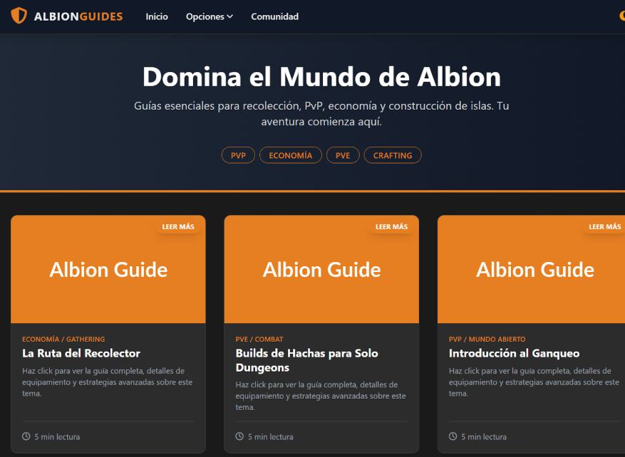
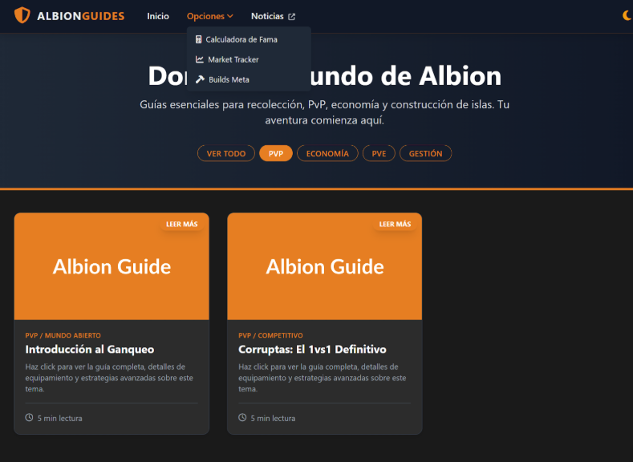
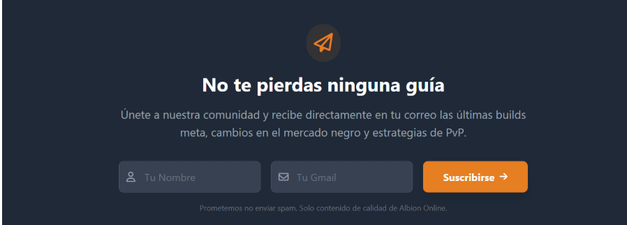

Prompt 1
Creación de la estructura base, tarjetas de guías, modo oscuro/claro y diseño responsivo.
Texto exacto:
Genera una página web, usando html, css y frameworks base de javascript, que sea sobre guías de albion online. Usa tarjetas(con una foto principal, titulo y subtitulo), que al hacerlas click, salga el contenido(la guia completa). Añade en la parte de arriba una un NavBar, un footer y una pestaña de opciones, que se añadirán más adelante. Añade a la derecha del todo del NavBar, una opción para elegir la página en modo claro u oscuro. Usa colores naranjas, de diferentes tonalidades como colores secundarios.
Haz que sea multiplataforma y se pueda usar en móviles.Foto de lo generado:
Prompt 2
Funcionalidad de filtrado por etiquetas y enlaces a noticias oficiales.
Texto exacto:
Añade que se puedan mirar las guías al pulsar las etiquetas correspondientes, además en las opciones, enlazar páginas correspondientes a las opciones que has puesto y en comunidad, cambiale el nombre por noticias y haz que te envíe a la web oficial de noticias del juegoFoto de lo generado:
Prompt 3
Integración de formulario de suscripción (Newsletter).
Texto exacto:
Añade debajo de las guías una sección donde se escribirá un formulario, para luego poder mandar mails a los usuarios cuando se suba una nueva guía. Este formulario ha de contener Nombre y GmailFoto de lo generado:
Prompt 4
Actualización de enlaces externos en el menú de opciones.
Texto exacto:
En la pestaña de opciones, cambia la opción de calculadora de fama por este enlace a el foro oficial de albion:
https://forum.albiononline.com/?s=7e64c4e23d0f444b2cff06e99c0f2b9add0597d8